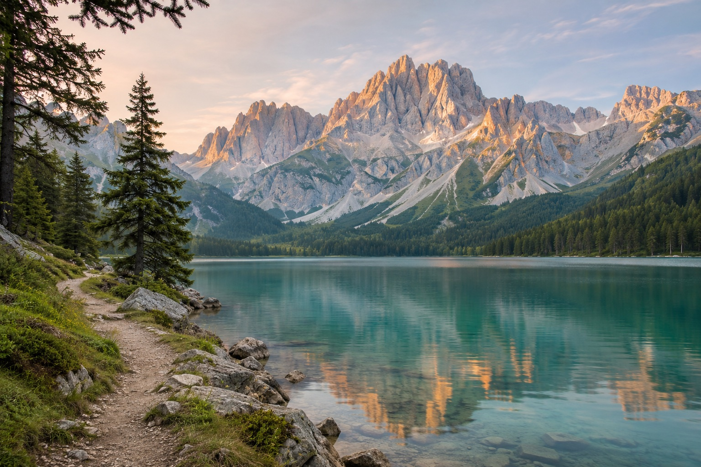
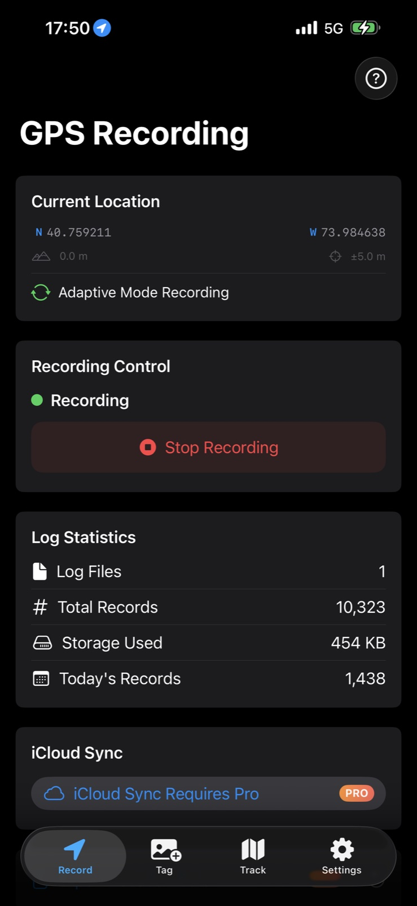
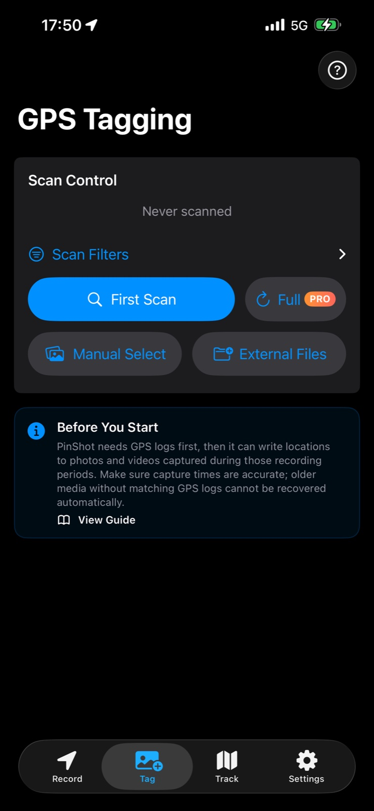
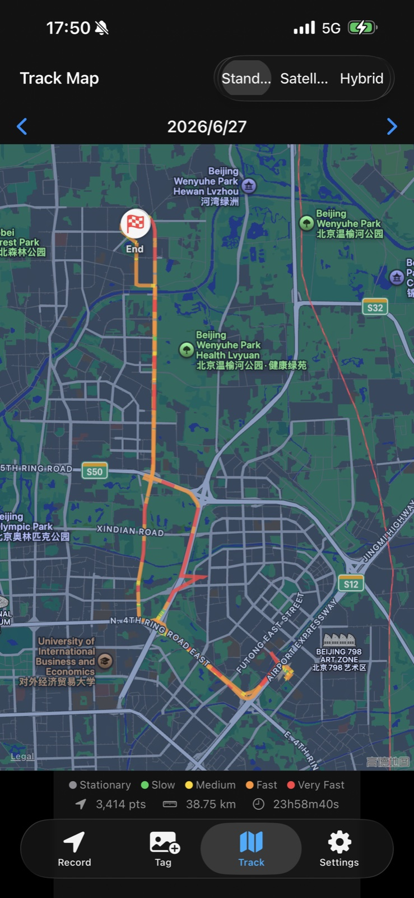

01
Record your route
Start GPS recording in PinShot on your iPhone before taking photos. Keep it with you while your camera captures the day.
FOR THE PLACES YOU WANT TO REMEMBER
Your camera captures the moment. PinShot remembers the place. Record your route, then add missing locations to your photos and videos by capture time.
For iPhone, iPad & Mac · Free with in-app purchases
Start recording before you shoot. Matching GPS logs and accurate capture times are required.

A LITTLE PREPARATION. A LASTING MEMORY.
A simple companion for camera days, weekend walks, and the trips you want to keep.
Start GPS recording in PinShot on your iPhone before taking photos. Keep it with you while your camera captures the day.
Import supported media into your photo library, or use files and folders on Mac with Pro. Make sure your camera’s clock is correct.
PinShot matches capture times with your recorded route and writes location metadata. Review the results and find your photos by place.
Already home from a trip? You’ll need PinShot logs that cover when the photos were taken. Locations cannot be recovered automatically without matching logs.
Read the getting-started guideA CLOSER LOOK
BEFORE YOU TAKE THE FIRST PHOTO
Start a recording session before you shoot. PinShot records in the background, with adaptive power saving when you’re stationary.

AFTER THE ADVENTURE
Find media without GPS information, select what you want to tag, and match its capture time to your PinShot logs.

REMEMBER THE WAY YOU WENT
Review your recorded route on a map, with speed segments, distance, duration and recorded points.

YOUR MEMORIES STAY YOURS
Your GPS logs are stored on your device by default. PinShot has no tracking server, no ad SDKs, and no PinShot account to create.
With Pro, you can choose to sync GPS logs through your own iCloud. The app does not sell or share your location data with third parties.
Read the app’s privacy policySTART WITH YOUR NEXT OUTING
Start free. Unlock Pro when you’re ready for bigger photo batches and a workflow across devices.
Try the core workflow with your own photos.
Choose a one-time lifetime purchase, or a monthly or yearly subscription.
Prices and available offers are shown in the App Store for your region. Monthly and yearly subscriptions renew automatically unless canceled. Lifetime is a separate one-time purchase, with no subscription renewal.
BEFORE YOUR FIRST TRIP
The right expectations make the first outing better. Here’s what to know before you start.
Ask a questionOnly when matching PinShot GPS logs exist for the time those photos were taken, and their capture times are accurate. PinShot cannot automatically recover an unrecorded journey or infer the original location from the image.
JPEG, HEIC/HEIF, PNG, TIFF and DNG photos; Live Photos in the system photo library; and MP4, MOV and M4V video containers, including common H.264 and HEVC video. Proprietary RAW files such as CR2, CR3, NEF, ARW, RAF and RW2 are not modified directly. Unsupported media is skipped.
On iOS, geotagging creates GPS-tagged copies and keeps the originals for your review and manual cleanup in Photos. For edited items, the current visible result is preserved, but the earlier edit and Revert history does not transfer. Mac Photos uses a validated replacement workflow; Mac folder tagging may modify selected files in place. Keep a backup of important originals.
Yes. Use GPS logs recorded on iPhone, transferred in PinShot’s own log format or synced through your personal iCloud with Pro. Mac can tag supported media, and Pro adds batch file and folder tagging. Mac does not replace the iPhone’s GPS recording workflow.
GPX import is supported in PinShot 1.3 and later. Choose a recorded GPX 1.0/1.1 track with valid timestamps, review the map and time range, and import it as a separate source. Planned routes without times cannot locate photos. Check the version available in your App Store before using this feature.
No. You can start with the free version, which includes up to 20 media geotags per month. Pro offers a separate lifetime purchase as well as monthly and yearly subscriptions. Check current prices and any trial eligibility in the App Store.
MAKE ROOM FOR THE NEXT MEMORY
Start your first recording before your next outing.